East Lancashire Railway
Heritage steam and diesel trains run through Ramsbottom on the line between Bury and Rawtenstall. The railway carried 143,225 visitors in 2024, according to its trustees' report.
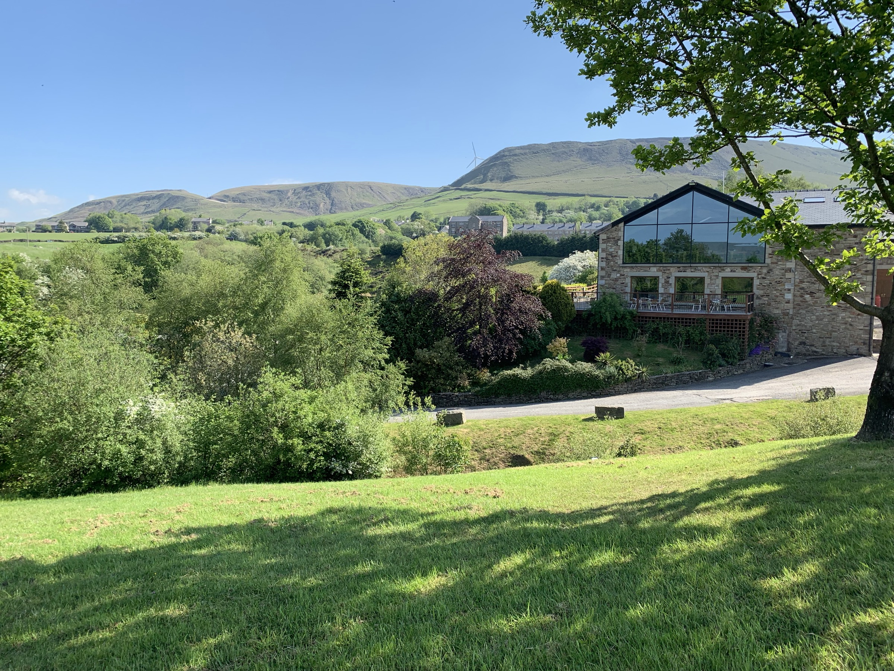
Private offering · Freehold · Planning granted
A well-known restaurant building in the hills above Ramsbottom. Planning permission has been granted for a gated private community of eighteen apartments.
The opportunity
The Magnall family built The Fisherman's Retreat and opened it in December 1992. They ran it for 33 years, closed the restaurant in February 2026 and now want to sell.
The building is about 18,000 sq ft of stone and slate on its own hillside, with views across the valley to the moors. People came for the food, the view and more than 500 single malt whiskies.
Rossendale Borough Council has granted planning permission to convert the building into eighteen apartments. The planning committee voted for it unanimously in March 2026. Most are large two-bedroom homes with their own outside space. It will be a gated private community, with one way in, its own parking and its own grounds.
This is a private sale, shown to a small number of people. The family own the freehold and can move quickly with a cash buyer.
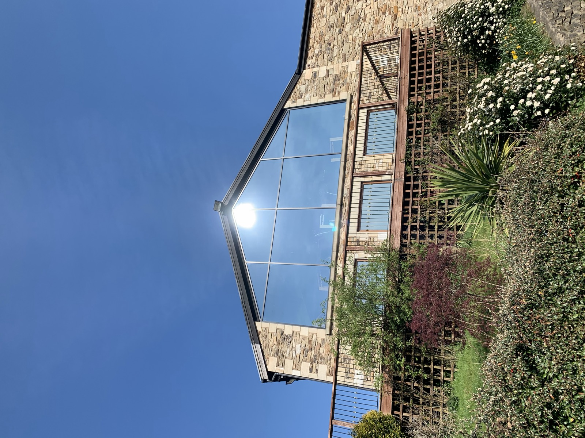
The scheme
Wake Morley Architects designed the scheme (application 2025/0148). It converts the main stone building and finishes the part-built south wing, which the council's planning officers describe as lawful and extant. The footprint of the building stays about the same. Officers concluded that the conversion is not inappropriate development in the Green Belt.
| Apt | Type | Sq ft | |
|---|---|---|---|
| Lower ground floor | |||
| 01 | Two-bedroom | 899 | |
| 02 | Two-bedroom | 1,273 | |
| 03 | Two-bedroom | 954 | |
| 04 | Two-bedroom, own front door | 1,048 | |
| 05 | Two-bedroom, own front door | 740 | |
| 06 | Two-bedroom, own front door | 857 | |
| 07 | Two-bedroom, own front door | 857 | |
| Ground floor | Sq ft | ||
| 08 | Four-bedroom duplex | 1,164 | |
| 09 | Two-bedroom | 1,230 | |
| 10 | Two-bedroom | 893 | |
| 11 | One-bedroom | 690 | |
| 12 | Two-bedroom | 893 | |
| 13 | Two-bedroom | 656 | |
| 14 | Two-bedroom | 770 | |
| 15 | Two-bedroom | 770 | |
| 16 | Two-bedroom | 684 | |
| 17 | One-bedroom | 601 | |
| First floor | Sq ft | ||
| 18 | Two-bedroom, beneath the glazed gable | 1,092 | |
| Total gross internal area | 16,071 | ||
Areas taken from the architect's GIA schedule on the planning drawings (drawing 02_01 R02). The drawings are shown below.
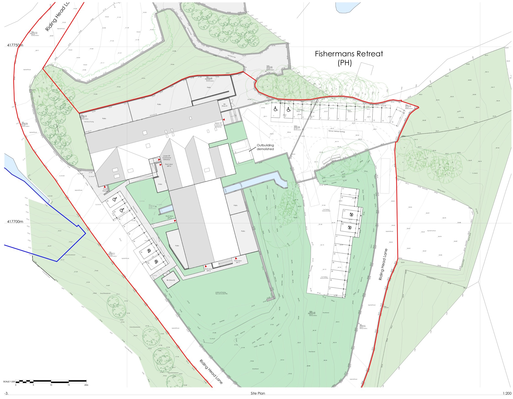
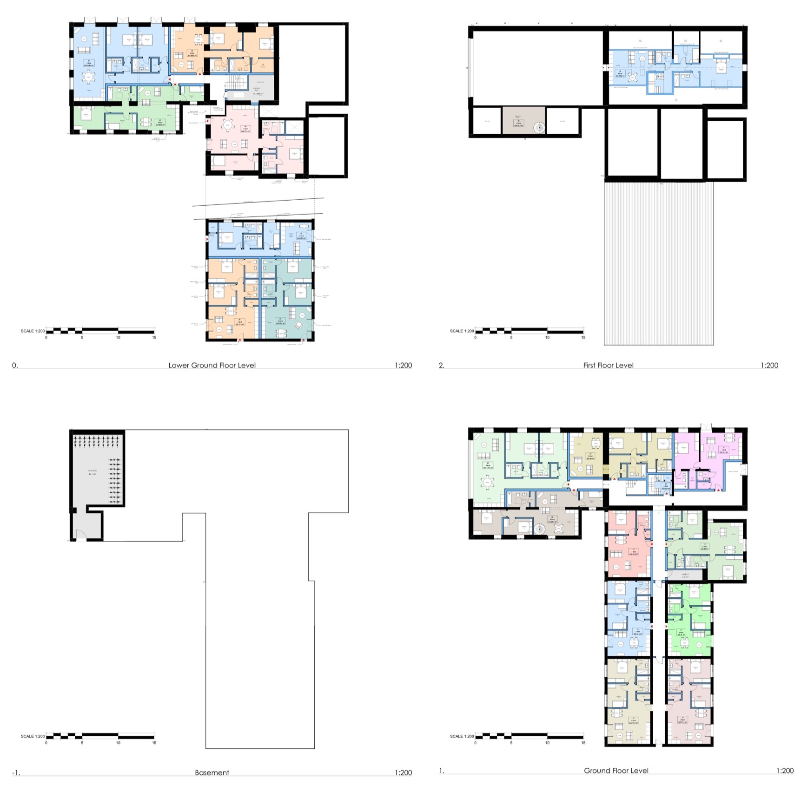
Site plan (PDF) Floor plans (PDF) Location plan (PDF) Brochure (PDF)
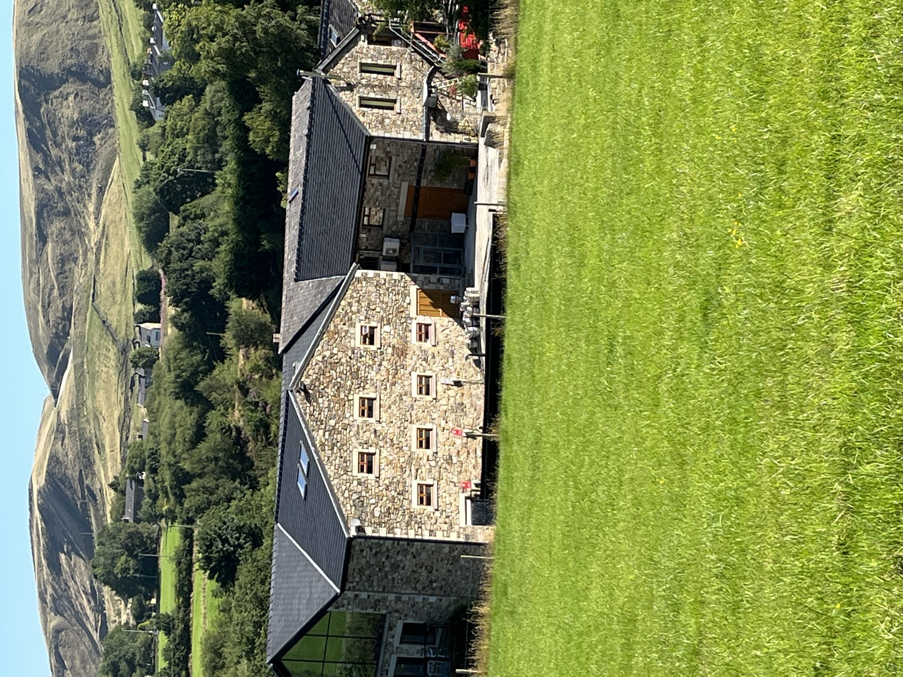
Ramsbottom
Steam trains still run through the middle of town. The East Lancashire Railway stops at Ramsbottom station and carried more than 143,000 visitors in 2024.
Around the station is a proper market town: stone streets, independent restaurants, pubs and shops, with Peel Tower on the hill above. The Sunday Times has twice named it one of the best places to live in the North West.
It is 15 miles from Manchester city centre. For 33 years The Fisherman's Retreat was one of the reasons people made the trip.
Heritage steam and diesel trains run through Ramsbottom on the line between Bury and Rawtenstall. The railway carried 143,225 visitors in 2024, according to its trustees' report.
Ramsbottom made the newspaper's North West list in 2013 and again in 2019.
The Eagle & Child was named Great British Pub of the Year in 2017. Michelin-starred Northcote is about 20 miles north.
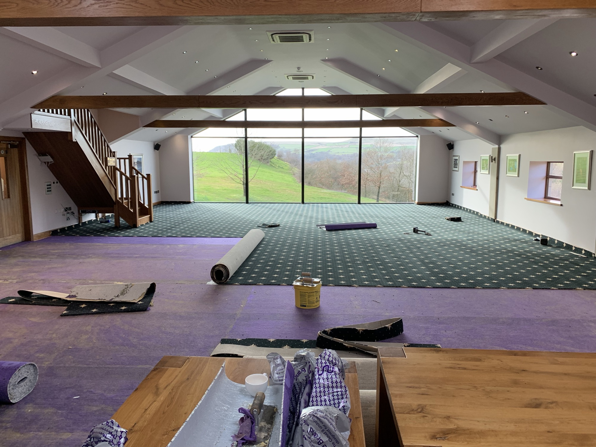
The estate
The building sits about 215 metres above sea level in Twine Valley. The application site is about two acres and covers the building, the car parks and the grounds around it. The family own more land and water around the site and will look at offers that include it.
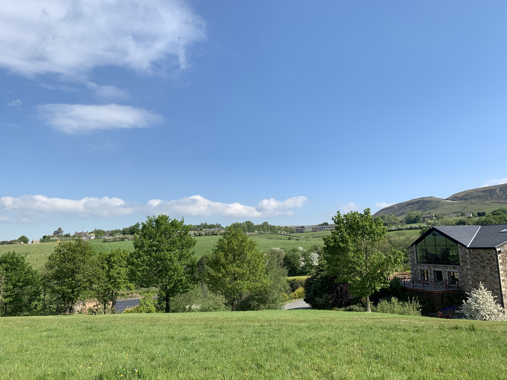
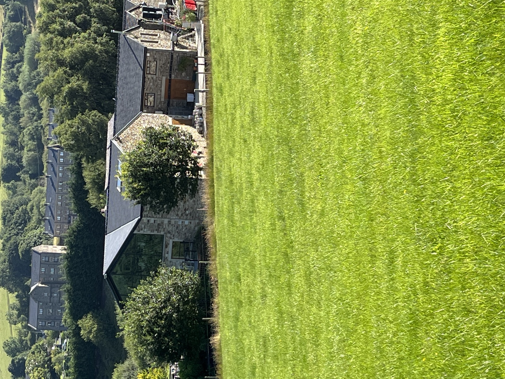
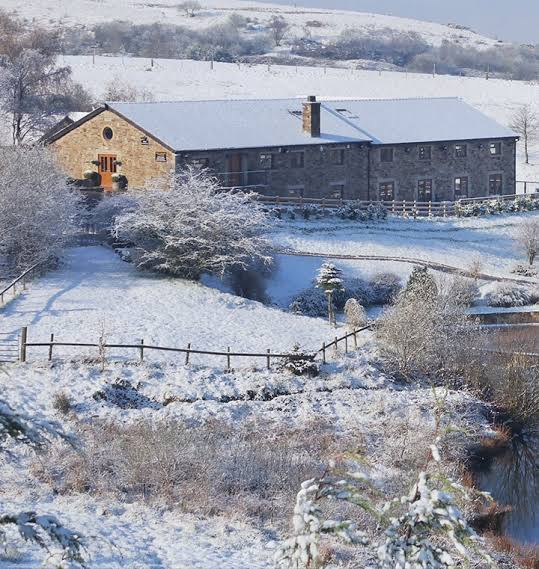
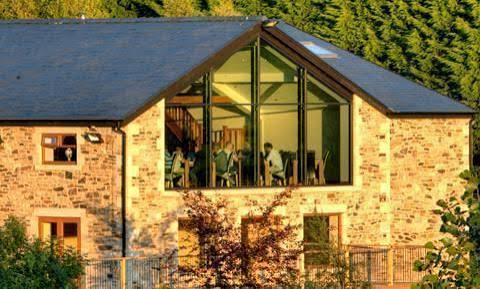
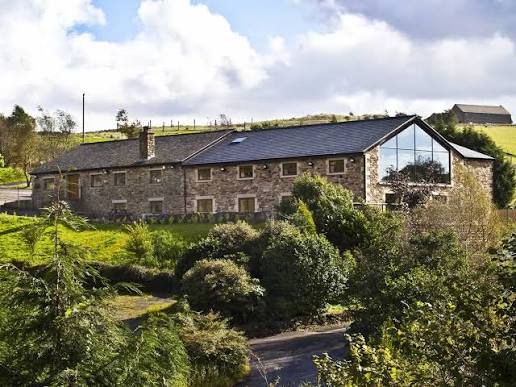
Options for a buyer
Build the eighteen apartments as a gated private community, to sell or to keep and rent out.
The building was a restaurant and bar for 33 years, with wedding suites and a whisky shop added later. An earlier permission for ten guest bedrooms in the south wing was lawfully started. A buyer could reopen it as a restaurant with rooms, subject to the consents needed.
With the extra land and water, by separate negotiation, this could be a private estate fifteen miles from Manchester, as a home or a long-term hold, subject to planning.
Location
The property is on Riding Head Lane in Shuttleworth, on the east side of the valley above Ramsbottom. Junction 1 of the M66 is about two miles away, so Manchester, the M60 and the airport are easy to reach.
Approximate road distances. Manchester city centre is about half an hour by car outside peak hours. Riding Head Lane, Shuttleworth, Ramsbottom BL0 0HH.
Transport links
Buses run from the A56, about three-quarters of a mile from the property, to Bury Interchange about every 30 minutes in the daytime. From Ramsbottom centre the 472 and 474 reach Bury in about 22 minutes, and the X41 Red Express runs direct to Manchester city centre.
Trams run from Bury Interchange, about 7 miles away, to Manchester Victoria in about 30 minutes and on to Piccadilly. Trams also run from Victoria to Manchester Airport.
By taxi or car it is about 15 minutes to Bury Interchange, about 30 minutes to Manchester city centre and about 35 to 45 minutes to Manchester Airport, outside peak hours.
Manchester Piccadilly has direct trains to London in a little over two hours and to Manchester Airport in about 15 to 20 minutes. The airport is 28 miles from the property by road.
Times are approximate. Check current timetables before travelling.
Terms
Enquiries in confidence
The brochure covers the scheme, the plans and the terms. The decision notice and the title information are sent on request. Email Jonathan or James.
Jonathan Kini
jonathan.kini@sjkconsulting.co.ukJames, for the family
james@fishermansretreat.com